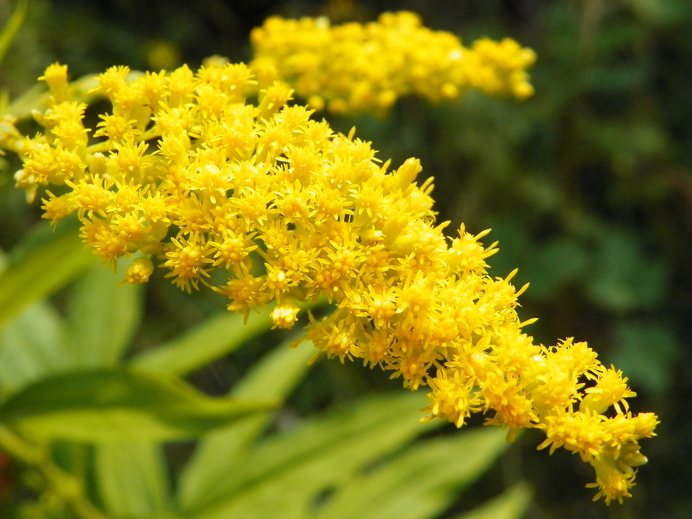

Specie: Phaseolus vulgaris
Taxonomy: Fabaceae; Papilionoideae; 50 kb inversion clade; NPAAA clade; indigoferoid/millettioid clade; Phaseoleae; Phaseolus
Abbr: Pvu
Level: Chromosome
chromosome number: 2n=2X=22

Introduction: Phaseolus vulgaris, the common bean, is a herbaceous annual plant grown worldwide for its edible dry seeds or green, unripe pods. Its leaf is also occasionally used as a vegetable and the straw as fodder. Its botanical classification, along with other Phaseolus species, is as a member of the legume family Fabaceae. Like most members of this family, common beans acquire the nitrogen they require through an association with rhizobia, which are nitrogen-fixing bacteria. The common bean has a long history of cultivation. All wild members of the species have a climbing habit, but many cultivars are classified either as bush beans or climbing beans, depending on their style of growth. Best-known cultivar groups include the kidney bean, the navy bean, the pinto bean, and the wax bean. The other major types of commercially grown beans are the runner bean (Phaseolus coccineus) and the broad bean (Vicia faba). Beans are grown on every continent except Antarctica. Worldwide, 27 million tonnes of dried and 24 million tonnes of green beans were grown in 2016. In 2016, Myanmar was the largest producer of dried beans, while China produced 79% of the world's total of green beans. The wild P. vulgaris is native to the Americas. It was originally believed that it had been domesticated separately in Mesoamerica and in the southern Andes region, giving the domesticated bean two gene pools. However, recent genetic analyses show that it was actually domesticated in Mesoamerica first, and traveled south, probably along with squash and maize (corn). The three Mesoamerican crops constitute the "Three Sisters" central to indigenous North American agriculture.
Distribution: Costa Rica, Guatemala, Honduras, Mexico Central, Mexico Gulf, Mexico Northeast, Mexico Northwest, Mexico Southeast, Mexico Southwest, Nicaragua, Panamá
Data source: Raw sequence reads and quality scores were deposited in the Sequence Read Archive (SRA) of the National Center for Biotechnology Information (NCBI). Primary accession numbers: PRJNA221782 (BioProject ID); SRS488731 (genomic 454, SOLiD and HiSeq reads); SRS488023, SRS488025, SRS489191-255 (GBS HiSeq reads); and SRS498664, SRS498673-76, SRS498904-933 (RNA-Seq HiSeq reads). The P. vulgaris BAT93 genome assembly is available at NCBI Whole Genome Shotgun database under accession number LPQZ00000000. Additionally, unmasked sequence data and annotations are available at the CoGe database (https://genomevolution.org/CoGe/SearchResults.pl?s=20365) under Genome ID 20365. The BAT93 genome and transcriptome can be accessed and browsed at http://denovo.cnag.cat/genomes/bean. The entire set of the linkage groups with anchored markers can be viewed at http://phasibeam.crg.eu/wiki/LinkageGroups.